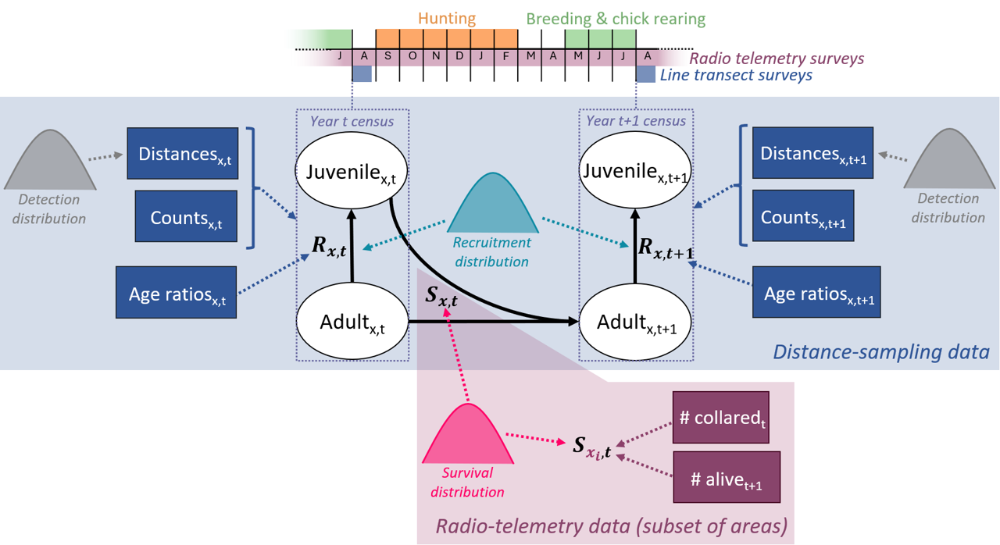
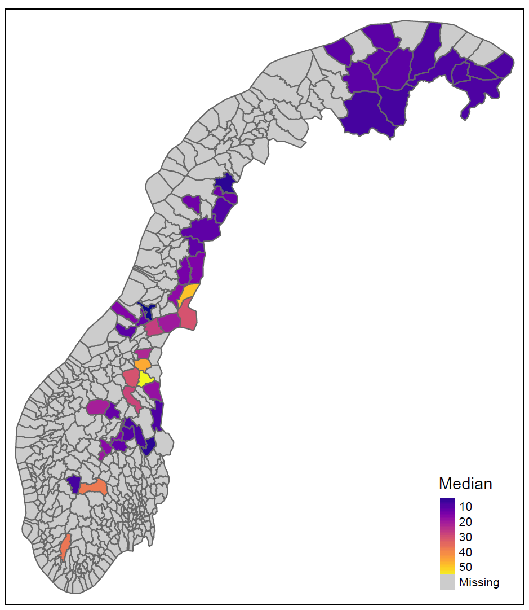
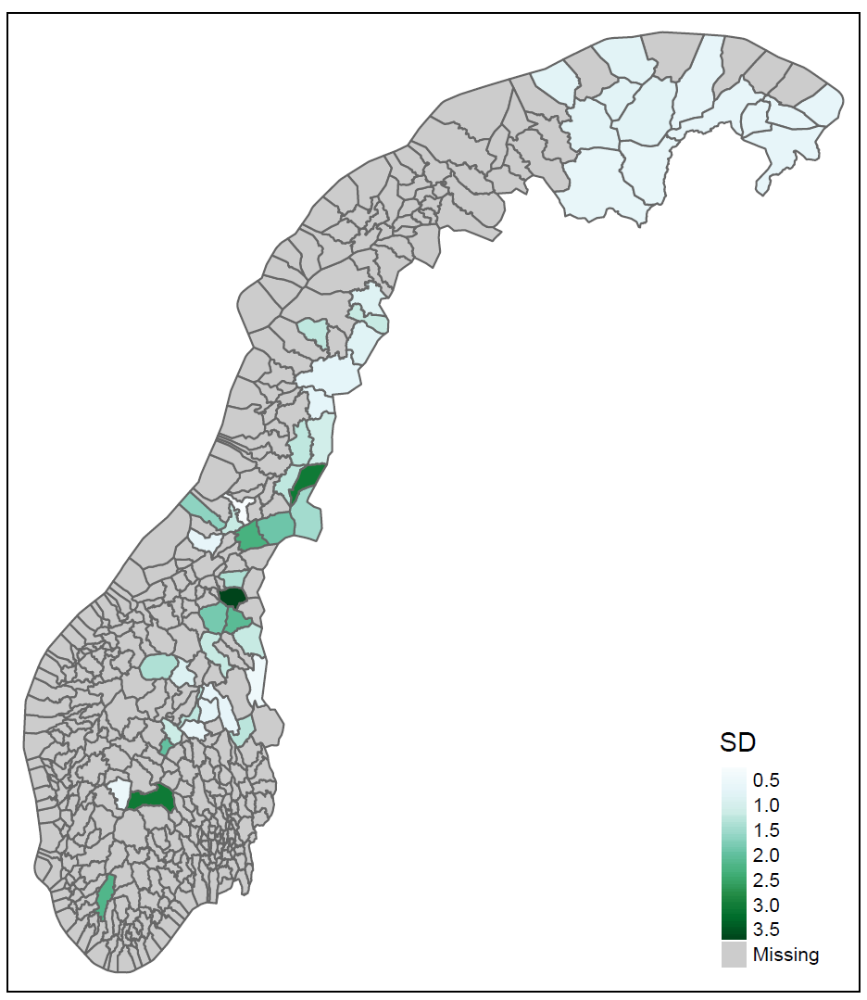
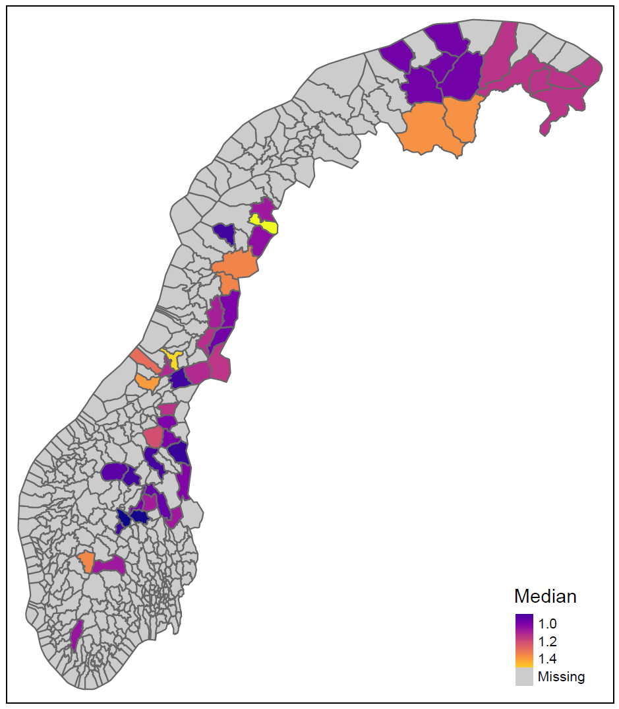
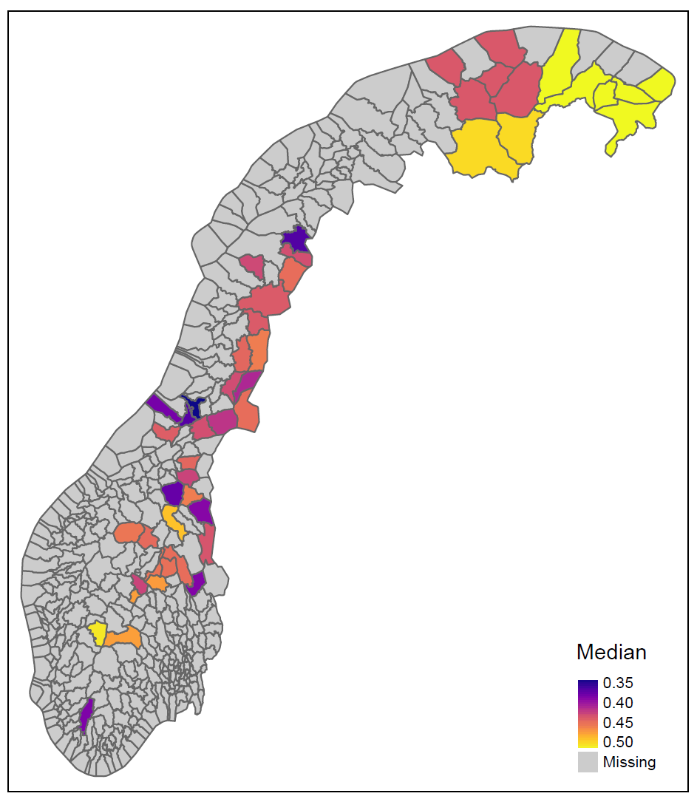
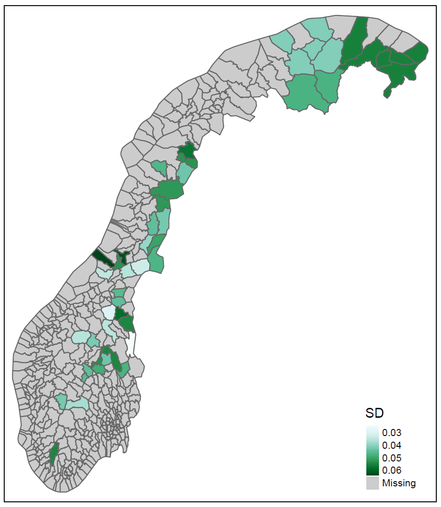
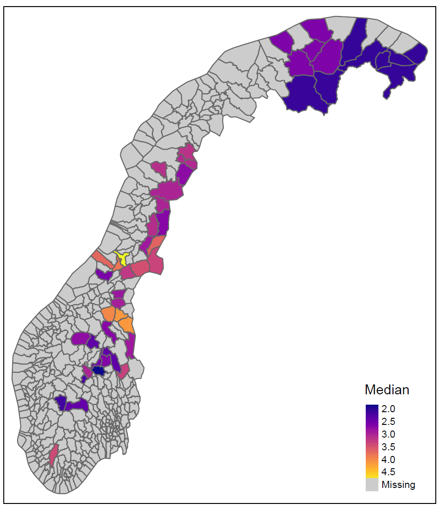
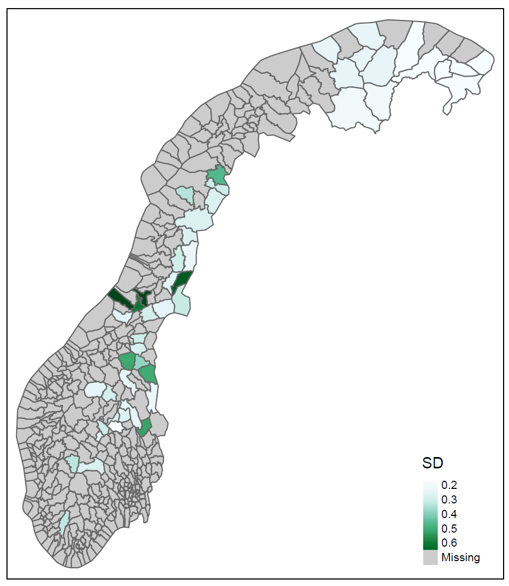
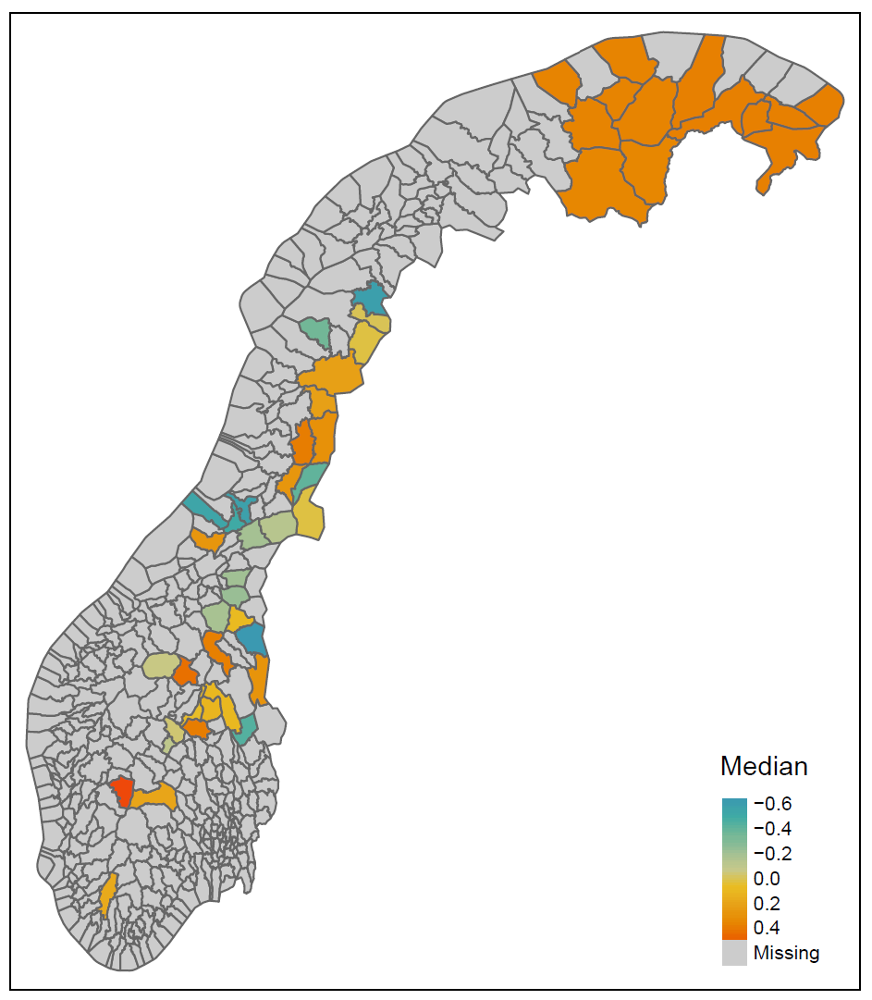
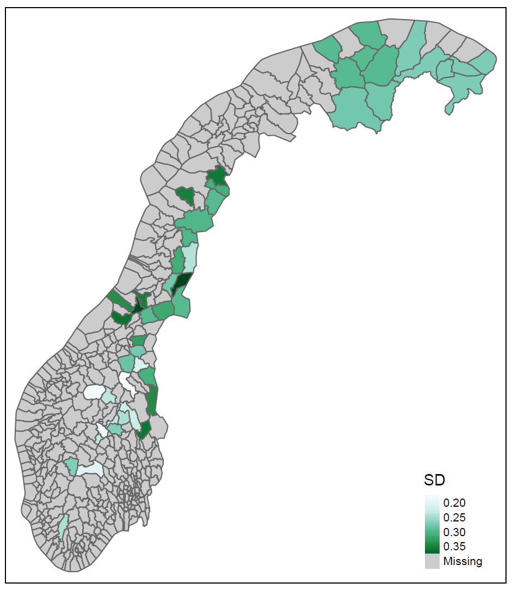

Large-scale spatiotemporal variation in vital rates of an alpine bird
About this worknote
The purpose of this worknote is to introduce and showcase preliminary results from application of the open-population integrated distance-sampling model (IDSM) for willow ptarmigan to data from all of Norway. Eventually, this model extension and resulting insights into large-scale spatiotemporal variation in density, population growth rate, and vital rates will be the subject of a second scientific paper. This paper will be written and submitted in the second half of 2023, and this worknote serves as a temporary substitute for it in the reporting of project results to Miljødirektoratet in June 2022. As such, the worknote contains a general description of the extension of the model to analyse data from multiple areas simultaneously, visualizations of some preliminary results, and an introduction to a reproducible workflow that allows to easily and robustly re-run analyses as new data becomes available in future years.
IDSM extension to multiple areas
Distance-sampling data on willow ptarmigan is collected on line transects not only in western Lierne, but across most of its Norwegian range (https://honsefugl.nina.no/). Taking the line transect datasets from Fjellstyrene, Statskog, and FeFo together, there is data for willow ptarmigan in 41 reporting areas (for a list, see https://github.com/ErlendNilsen/OpenPop_Integrated_DistSamp/blob/main/R/listAreas.R). The model developed as part of this project and presented in Nilsen and Nater (2023) was designed with the potential of extension to run on data from multiple areas simultaneously in mind, and this extension involves two steps in practice.
The first step is the inclusion of an additional dimension, area, to enable using data collected from multiple areas (Figure 1). The area-dimension is added across all model components with the exception of the known-fate telemetry data (and seasonal decomposition of survival estimated from it), as that is only available for the Lierne area.

The second step is making adjustments to capitalize on the integration of data from multiple areas to make maximal use of available information. There are several not mutually exclusive options for approaching this, and one of them is the use of “hyper-parameters” for sharing information across areas (e.g. Horswill et al. 2019, 2021). As an illustrative example, take the area-specific average annual survival probability, \(\mu^S_x\). Instead of assigning independent non-informative priors to each \(\mu^S_x\), we now assume that the variation in average survival across space can be described by a common (logit) normal distribution such that:
\[ \begin{equation} \mu^S_x \sim Normal(logit(h.\mu^S), h.\sigma^S) \end{equation} \] where \(h.\mu^S\) is the “hyper mean” and \(h.\sigma^S\) is the “hyper standard deviation”. Non-informative priors are then assigned to the hyper-parameters instead of the area-specific realizations:
\[ \begin{align} h.\mu^S & \sim Uniform(0,1) \\ h.\sigma^S & \sim Uniform(0, 5) \end{align} \]
For the multi-area implementation of the IDSM, we used the equivalent of the above approach for parameters representing average survival probabilities, baseline recruitment rates, rodent effect on recruitment, and average distance sampling detection. Initial population density, on the other hand, was estimated independently for each area. Random effects standard deviations were assumed to be the same for all areas, effectively resulting in space-for-time subtitution for random effect estimation.
Another approach to maximising information gain when jointly analysing data from different areas is explicit modelling of spatial and spatio-temporal variation. While this is commonly done for modern species distribution models (e.g. Pacifici et al. 2017; Guélat and Kéry 2018), it has rarely been implemented in demographic models. This is not least due to the fact that few demographic models span large spatial extents. Since our IDSM and the willow ptarmigan data do actually do that though, extending the framework to account for spatial and spatiotemporal correlations may be feasible. Per now, we have not yet attempted this, but are planning to do so in the near future.
Preliminary results
Population density


Population growth rate


Survival probability


Recruitment rate


Effect of rodent occupancy

